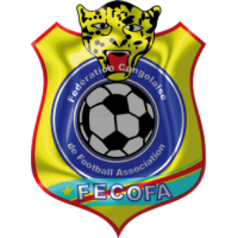
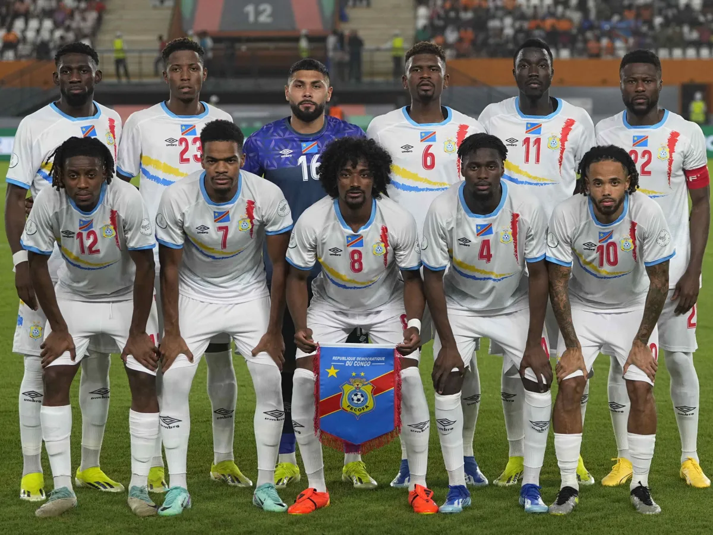

Rep. Dem. do Congo
Rep. Dem. do Congo
1
Participação
(1974)

África
A seleção da República Democrática do Congo, anteriormente conhecida como Zaire, representa o maior país da África Subsaariana nas competições internacionais. O país participou de sua única Copa do Mundo em 1974, quando ainda se chamava Zaire, sendo a primeira seleção da África negra a disputar um Mundial. Bicampeã da Copa Africana de Nações (1968 e 1974), a RD Congo busca retornar às grandes competições internacionais.

Goleiros:
Defensores:
Meio-campistas:
Atacantes:
Participação
(1974)
Títulos
Melhor campanha
Primeira
participação
| Ano | Sede | Resultado |
|---|---|---|
| 1974 (como Zaire) | Fase de Grupos |
| Participações | 1 |
| Títulos | 0 |
| Vice-campeonatos | 0 |
| 3º Lugar | 0 |
| 4º Lugar | 0 |
| Melhor campanha | Fase de Grupos (1974) |
| Jogos disputados | 3 |
| Vitórias | 0 |
| empates | 0 |
| Derrotas | 3 |
calendar_monthJunho - Julho de 2026
location_onMéxico, Estados Unidos e Canadá